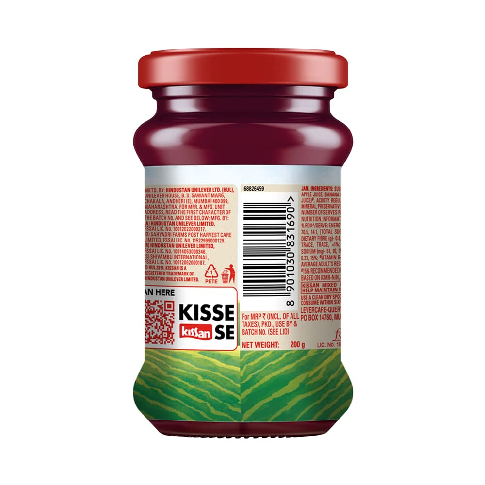
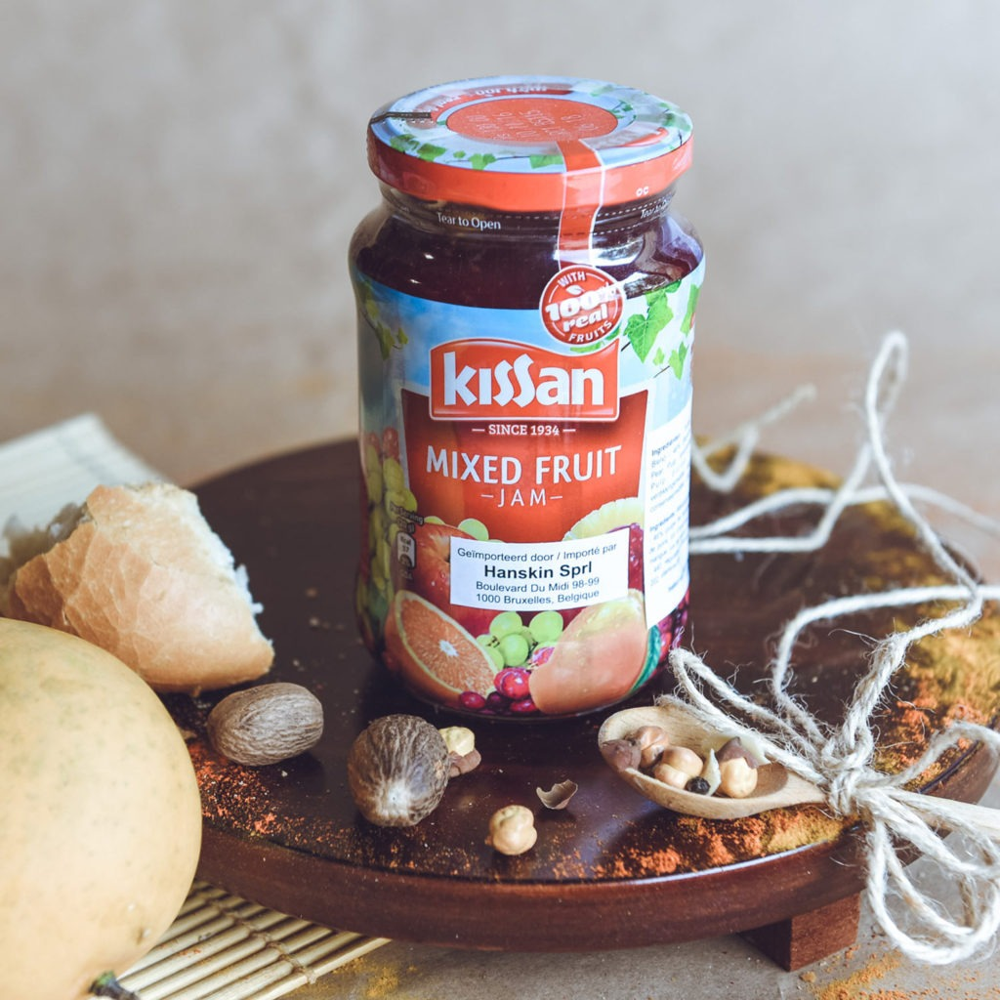
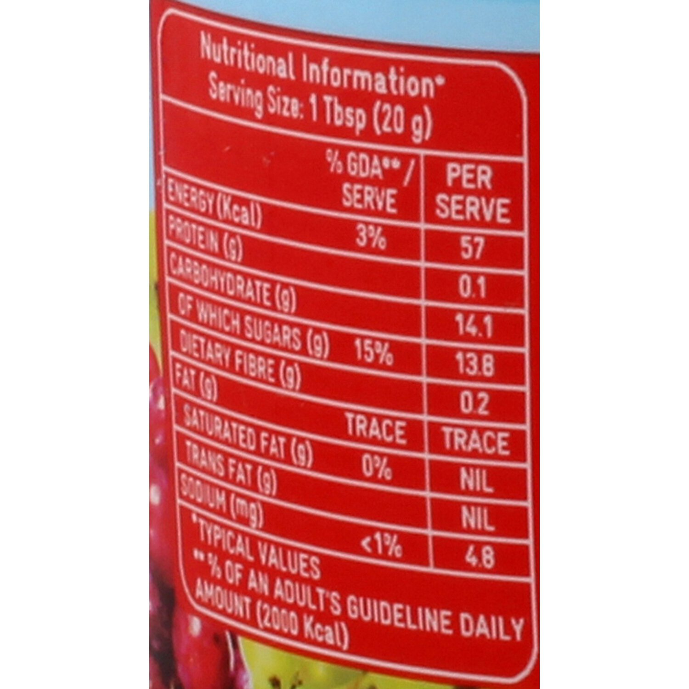

<mat-icon type="button" class="btn-close" aria-label="Close" style="float: right;margin-right:5px;" matDialogClose>clear</mat-icon>
<div class="form-inline" style="margin-top:5%">
  
  
  
</div>
<div class="form-inline" style="margin-top:5%">
  
  
  
</div>
